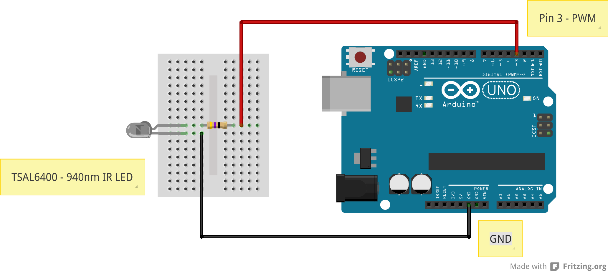

ISS Notifications
International Space Station overhead pass notifications
(using Python and Arduino to control cheap RGB LED strips)
Project maintained by zero-signal
Introduction
I recently bought some cheap RGB LED strip lights, which included 16.4ft of weatherproof RGB LEDs, an infra-red receiver unit to control the strip, an AC power adapter and a 44 button remote control all for about $20. LEDs are not addressable but they are easy and cheap to find. As you can see from the image below these were 'Supernight' branded and are easy to find online.

At first I thought they were cool just being used to light up my office, but soon thought I'd have a go at controlling them using an Arduino. I did not want to damage the remote or the receiver so looked at using an IR LED hooked up to my ageing Arduino Duemilanove to control the light strip.
Using the excellent IRremote library from Ken Shirriff I was easily able to record the signals from the original remote control unit and play them back using an Arduino. So far so good but I needed a project.
Enter the International Space Station (ISS).
Using the great OpenNotify API by Nathan Bergey I created some scripts and Arduino firmware to control the strip lights according to the current position of the ISS! I have seen similar projects such as this before (in fact Nathan has one up on Kickstarter which OpenNotify was created to support) but I thought I'd use what I already had lying around!
Python script
The included iss_notification.py script uses the open source OpenNotify API to retrieve calculated overhead passes of the ISS for a given observation position defined by latitude/logitude and altiude.
Retrieved passes get printed to the terminal window and optionally simple 'status' codes can be sent over a serial port (which is specified by the -s or --serial command line option. This is intended to be used in order to send some physical indication of upcoming ISS passes and how far away in time they are. In my case, I'm using receiving these commands with an Arduino and using it to replay the IR codes to control the LEDs.
The script uses are series of simple states, which depending on how far the ISS is from the invokers location dictates how often pass data is retrieved. These states are defined in the dictionary object iss_states but can be described as follows:
- RECEDING: ISS > 45 mins away, update every 120s
- APPROACHING: ISS < 45 mins away, but > 15 mins away, update every 60s
- CLOSING: ISS < 15 mins away, but > 5 mins away, update every 30s
- INCOMING: ISS < 5 mins away, but > 1 min away, update every 15s
- IMMINENT: ISS < 1 min away, update every 5 seconds
- OVERHEAD: ISS overhead, no update until pass has completed.
This scheme is used in order to minimise load on the open-notify API servers whilst attempting to increase the accuracy of the notifications as the ISS approaches the observers location.
If using the --serial option, different codes are sent (currently just simple ASCII values) according to the 'state' transitions (see above). Currently, the script outputs the letters A thru F, with Z being denoted as a test command.
Commands are delimited by a leading '$' and a trailing '!'
Invocation
The only required parameters for the script are a longitude and latitude pair, so the script can simply be invoked as follows to display pass data to the terminal window:
python ./iss_notitification.py --latitude 11.11 --longitude 22.22Note: This will NOT output anything to a serial port. To do so, add the --serial command line argument as follows:
python ./iss_notitification.py --latitude 11.11 --longitude 22.22 --serial /dev/ttyUSB0Often, the screen utility is useful to start the process in a background (detached) state, like the following example. This is useful for running the script within a startup script:
screen -d -m -S "ISS_NOTIFY" python ./iss_notification.py --latitude 11.11 --longitude 22.22 --serial /dev/ttyUSB0More detailed usage information (including information on additional command line options not discussed here) can be found by invoking the scripts built in usage documentation as follows:
python ./iss_notification.py --helpRequirements
This script was developed and tested on Python v2.7.5 and is known not to work without modification on v3.x
The script also requires the following libraries:
- python-requests
- python-serial
- python-enum34
Arduino Hardware
The Arduino hardware for this project is extremely simple. It consists of the following components:
- 1 x Arduino Duemilanove (or Uno, most standard arduino boards should work)
- 1 x TSAL 6400 940nm IR-LED
- 1 x 47R 1/4w resistor
- A couple jumper wires
- A box to put it all in (optional
Connecting up the hardware is shown in the diagram below:
For more information on recording codes from the original IR remote and further detailed documentation on the Aruino IRremote library see this page.
Additional Hardware
In addition to the above hardware for the Arduino part of the project you will also need the following:
- 1 x Supernight RGB LED strip (with remote and AC adapter included)
Arduino Firmware
Video
Credits
The OpenNotify API is copyright Nathan Bergey (@natronics)
The Arduino library IRremote is copyright Ken Shirriff (@shirriff)
Disclaimer
This software and its documentation is provided as-is. I take no responsibility for the accuracies of this script or any of the external services/APIs that it may use to generate its notifications. Please be aware that notifications are only accurate to within a few seconds and are not intended to give scientifically precise indications of the ISS' current orbital position (and as such, should not be relied upon to do so).
This script and associated instructions are provided purely for casual observations of ISS passes.
License and Copyright
Copyright (C) 2014 - Zerosignal
This program is free software: you can redistribute it and/or modify it under the terms of the GNU General Public License as published by the Free Software Foundation, either version 3 of the License, or (at your option) any later version.
This program is distributed in the hope that it will be useful, but WITHOUT ANY WARRANTY; without even the implied warranty of MERCHANTABILITY or FITNESS FOR A PARTICULAR PURPOSE. See the GNU General Public License for more details.
You should have received a copy of the GNU General Public License along with this program. If not, see http://www.gnu.org/licenses/.